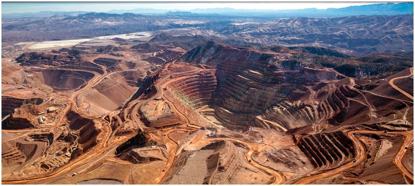

Services
Independent advisory support on human rights, social impacts, responsible mining and sustainable resource development.

RJ Kent Consulting provides specialist advisory services to companies, investors, consulting firms, civil society organisations and multilateral institutions operating in complex resource environments.
The work combines field-based assessment, stakeholder engagement, human rights analysis and strategic advisory support to identify and address social risks associated with extractive industries and mineral supply chains.